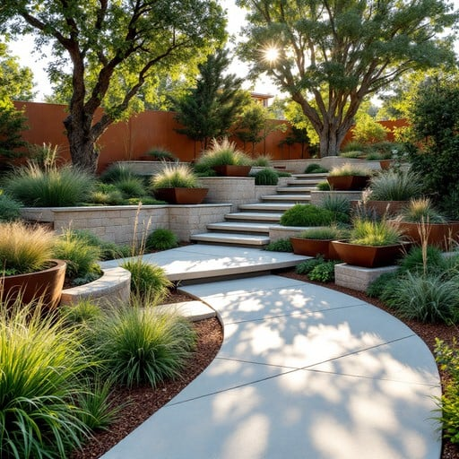
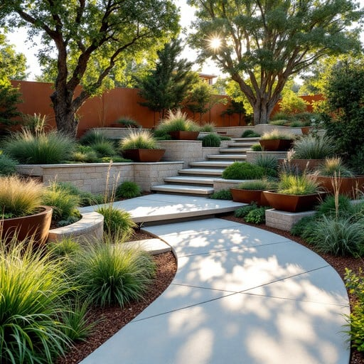

About Greenbloomsflaura
Greenbloomsflaura is your dedicated partner in transforming everyday outdoor spaces into enchanting natural havens. Founded with a passion for plants and the environment, our mission is to provide inspiration, education, and quality gardening solutions to enthusiasts of all levels — from beginners to seasoned horticulturists. Whether you're looking to cultivate a vibrant flower garden, a sustainable vegetable patch, or a tranquil green retreat, Greenbloomsflaura offers hands-on guidance and resources to help you grow your dream garden.
We believe gardens are more than just plots of land — they are living art, spaces for rejuvenation, and vital ecosystems supporting wildlife. Through carefully curated articles, expert service offerings, and inspiring visuals, we aim to nurture your love for nature right at home.
Our Services
To bring your garden visions to life, Greenbloomsflaura offers a wide range of specialized services tailored to your unique needs:
- Garden Design & Planning: Custom landscape design crafted to enhance your outdoor environment with a harmonious blend of colors, textures, and plants optimized for your locale.
- Plant Selection & Supply: Access to a curated selection of healthy, high-quality plants ranging from native perennials and seasonal blooms to rare exotic species.
- Soil Testing & Improvement: Comprehensive soil assessment and nutrient optimization to ensure your garden thrives from the roots up.
- Seasonal Maintenance & Care: Professional upkeep to keep your garden flourishing year-round, including pruning, mulching, pest management, and irrigation checks.
- Workshops and Tutorials: Interactive sessions to empower you with practical gardening knowledge, from seed starting to composting techniques.
Gardening Tips for Every Season
Whether you're starting your first garden or looking to refine your green thumb, these tips will help you cultivate a healthy, vibrant outdoor space:
- Spring Awakening: Begin by preparing your soil with organic compost and test its pH level. Choose early bloomers like tulips, daffodils, and pansies to add cheerful color after winter.
- Summer Care: Water deeply but less frequently to encourage strong roots. Use mulch to retain moisture and control weeds. Keep an eye out for common pests and treat them promptly.
- Fall Preparation: Plant bulbs for the next spring and prune back overgrown shrubs. This season is ideal for planting trees and perennials so they establish before winter.
- Winter Wisdom: Protect vulnerable plants with burlap wraps or cloches. Use this quieter season to plan next year's garden and start seeds indoors for an early start.
- Sustainable Practices: Incorporate rainwater harvesting, native plants, and organic fertilizers to reduce environmental impact and create a wildlife-friendly habitat.
Gallery


 

Contact Us
Ready to bring your garden dreams to life? Reach out to our experienced team and let's cultivate something beautiful together.
Get in Touch